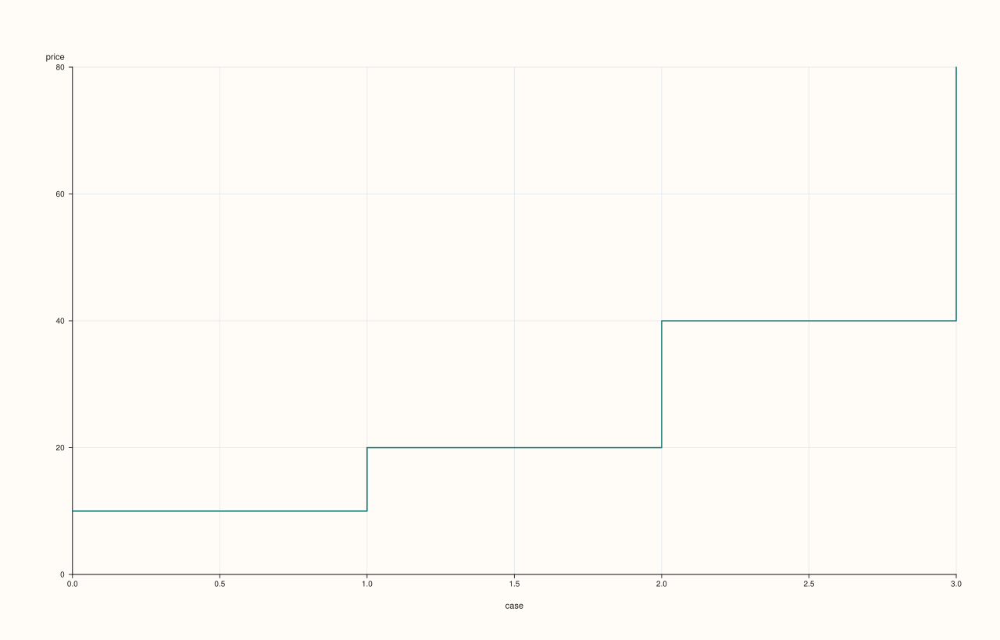
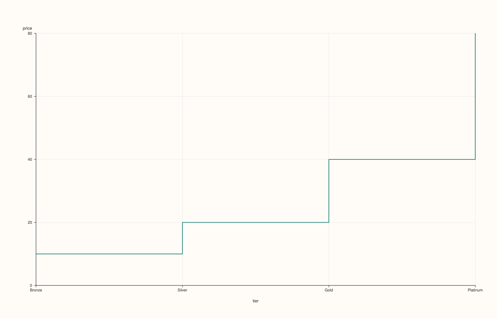
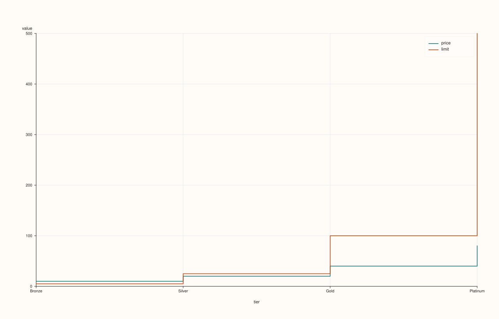

DataFramePlotAccessor::step¶
Back to DataFramePlotAccessor API Reference
Signatures¶
DataFramePlotAccessor::step(std::string_view y_feature,
std::optional<std::string_view> x_feature = std::nullopt) const -> pluss::pl::Studio
DataFramePlotAccessor::step(std::string_view y_feature,
std::optional<std::string_view> x_feature,
const StepPlotOptions& options) const -> pluss::pl::Studio
DataFramePlotAccessor::step(pluss::msharp::RangeView::Of<std::string_view> y_features,
std::optional<std::string_view> x_feature = std::nullopt) const -> pluss::pl::Studio
DataFramePlotAccessor::step(pluss::msharp::RangeView::Of<std::string_view> y_features,
std::optional<std::string_view> x_feature,
const StepPlotOptions& options) const -> pluss::pl::Studio
DataFramePlotAccessor::step(std::initializer_list<std::string_view> y_features,
std::optional<std::string_view> x_feature = std::nullopt) const -> pluss::pl::Studio
DataFramePlotAccessor::step(std::initializer_list<std::string_view> y_features,
std::optional<std::string_view> x_feature,
const StepPlotOptions& options) const -> pluss::pl::Studio
What It Does¶
Identical in shape to line() — one trace per y-feature over a shared x-axis,
same three overload families (single feature, RangeView, initializer_list), same
x-axis-resolution rules (explicit argument, then options.default_x_feature, then the
frame’s own row labels titled "case") — but each trace is drawn as a step function
(horizontal-then-vertical jumps between points) instead of straight line segments between
consecutive points. This is the natural chart for a value that stays constant between
discrete changes (a price that only updates at known events, a rate that steps between
tiers) rather than one that continuously interpolates.
See line() for the full explanation of the shared mechanics (the
Studio-return / no-cout behavior, and the three-step x-axis resolution) — this page
only covers what’s specific to step().
Parameters¶
y_feature / y_features (std::string_view / RangeView<std::string_view> /
std::initializer_list<std::string_view>)
Same as line(): one or more numeric features, each drawn as its own step
trace. At least one is required — an empty list throws "DataFrame::plot().step: at least one y feature is required".
x_feature (std::optional<std::string_view>, default std::nullopt)
Same three-step resolution as line().
options (StepPlotOptions)
cpp struct StepPlotOptions { double alpha{1.0}; double line_width{1.5}; XYAlignOptions align{}; };
Only opacity, stroke width, and align — unlike LinePlotOptions, there is
no y_limit_method field on StepPlotOptions; the y-axis always uses the figure’s
default auto-fit behavior for step charts. align is present but inert here — see
line()’s note on the field.
Returns¶
pluss::pl::Studio
A figure with one pane containing one step trace per requested y-feature.
Examples¶
Example 1. A single feature, explicit x-axis.
using namespace pluss::table;
auto rates = DataFrame({
{"tier", Thread(pluss::make_note({"Bronze", "Silver", "Gold", "Platinum"}))},
{"price", Thread(pluss::make_series({9.99, 19.99, 39.99, 79.99}))},
{"limit", Thread(pluss::make_series({5.0, 25.0, 100.0, 500.0}))},
});
auto chart = rates.plot().step("price", "tier");
chart.show();
price is drawn as a step function against the categorical tier axis — visually
emphasizing that the price is constant within a tier and jumps at tier boundaries, rather
than implying a continuous interpolation between tiers.

Example 2. Multiple y-features via initializer_list, sharing one x-axis.
auto chart = rates.plot().step({"price", "limit"}, "tier");
chart.show();
Two step traces (price and limit) share the tier x-axis on one pane; a legend appears
automatically since more than one y-feature was requested.

Example 3. The same multi-feature call via a reusable RangeView.
std::vector<std::string_view> y_names{"price", "limit"};
auto chart = rates.plot().step(pluss::msharp::RangeView::Of<std::string_view>(y_names), "tier");
chart.save_pdf("tiers.pdf");

Example 4. No x_feature: falls back to the frame’s row labels, exactly as
line()’s Example 3 demonstrates.
auto chart = rates.plot().step("price");
chart.show();
With no x_feature and no default_x_feature configured on the accessor, the x-axis
becomes rates’ own row labels (the default 0, 1, 2, 3 case index here, since
rates was constructed without explicit row labels), titled "case".

Example 5. An explicit StepPlotOptions.
StepPlotOptions step_options;
step_options.alpha = 0.8;
step_options.line_width = 2.0;
auto chart = rates.plot().step("price", "tier", step_options);
chart.show();

Example 6. Multiple y-features with an explicit options object.
auto chart = rates.plot().step({"price", "limit"}, "tier", step_options);

Notes¶
See Also¶
DataFramePlotAccessor::line: the straight-line-segment counterpart, and the canonical explanation of this accessor’s shared x-axis andStudio-return mechanics.DataFramePlotAccessor::area: a filled variant of the same shape.